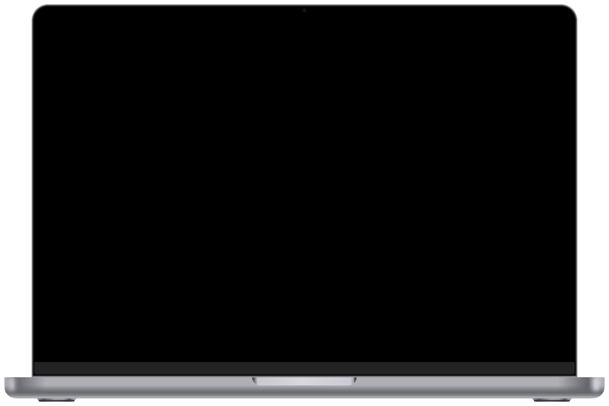

A regional provider sells home internet, TV, mobile and add-ons, all billed daily from one balance. Speed is already capped at 1 Gbit/s, so the task was to grow the bill through TV, add-ons and mobile, cut blocks for non-payment and keep subscribers longer. The logic of five major flows was rebuilt, keeping as much continuity as possible: the same look and components built from the site’s own styles.

A provider that can’t sell more speed
Read
A regional home internet provider: internet up to 1 Gbit/s, digital TV with 47 packages, mobile, equipment for rent or in instalments, partner add-ons such as Wink and Kaspersky. Everything is billed daily from one balance, and the personal cabinet is one long dashboard.
The tasks came from the business as metrics: grow what each subscriber pays, cut blocks for non-payment and keep customers longer. Selling more speed isn’t an option – 1 Gbit/s is the top of the line – so growth has to come from TV, add-ons and mobile. The product owner and I started every task by working out where the cabinet loses money and what already works for competitors.
How we worked
Read
- The product owner brought each task with the metric to move and the business constraints
- Together we worked out how the provider earns and where the cabinet loses money – that grew into a product map of the levers
- We analysed competitors – how MTS, MegaFon, T-Bank, Rostelecom and Dom.ru sell autopay, bundles and add-ons – and backed decisions with research by major players in the industry, only with a public source
- Kept continuity: new screens use the same components and styles as the rest of the cabinet
- Thought every flow through end to end – from the entry point to the screen after payment – by one rule: before the click you see what you’ll pay and until when the balance lasts
Where the cabinet loses money
Show the table
| Lever | Before | What we did | Why it matters |
|---|---|---|---|
| TV packages | 47 packages in a list, “Connect more” opens what you already have, the −26% offer buried in a notification | Flow B: three superpackages, “+N new channels”, monthly price | “Everything” on promo adds 21 ₽ a day – +62% to the bill |
| Add-ons | Kaspersky, “Who’s calling?” and Wink as three banners in three styles, no prices | Flow D, a business task: the Online+ subscription – price against buying separately, cashback in Chatly | Speed is capped, so the bill grows only through add-ons – like MTS Premium and T-Bank Pro |
| Mobile | The SIM banner doesn’t say what it gives a customer who already has internet | Flow E: Top 43 for +10 ₽ a day, a savings calculator, number porting, one payment | Bundles keep households – MTS grew its converged base by 20%+ in a year |
| Paying ahead | Quick sums of 300–1,000 ₽ while the tariff costs 1,020 ₽ a month | Flow C: periods with exact dates, a year with a gift month | Money upfront and a year without churn risk |
| Autopay | A small link, status at the bottom of the page, changing it means switching it off and on | Flow A: “lasts until”, a prompt at the balance, edit in place | Fewer blocks and calls – MTS saw 35% fewer requests after such reminders |
| Chatly bonus | “0 · Reserve” with no explanation | Flow D: cashback in Chatly. Backlog: “bring a friend” for 300–1,000 Chatly | The bonus currency starts working |
| Equipment | The catalog ignores the tariff, rent and instalments hidden in a dropdown | Backlog: a Wi-Fi 6 router for gigabit, three ways to pay side by side | 4–12 ₽ a day per subscriber |
| Speed | 1 Gbit/s is the top of the line | Leave as is | – |
A · Autopay: say when the money runs out
Task: cut blocks for non-payment
Read the case
Billing is daily: 34 ₽ a day. Going through the cabinet, we saw why people got blocked: it shows the balance but not how long it lasts, so they learn about it when the internet is already off. Autopay could fix that, and the cabinet hid it: a small link under the balance that stayed even when autopay was on, a status card at the very bottom of the page, and settings you could change only by switching autopay off and on again.
The rules disagreed too: the settings said it pays when the balance drops below 100 ₽, the dashboard showed a fixed date. We decided to put the forecast and autopay right at the balance and let people change the settings in place.
What we did
- Under the balance: “Lasts until 3 May”
- Next to it, a prompt with the sum for the tariff and the day it will be charged
- One panel for everything: amount (the tariff price is recommended), when to charge, which card – all editable in place
- Once it’s on, the balance card says “Autopay is on, 1,020 ₽ on 30 April”
What backs the decisionMTS: flexible reminders about an unpaid bill cut blocking-related requests by 35% (annual report 2024) Source ↗
Before



- 1The balance doesn’t say how long it lasts
- 2The same small link whether autopay is on or off
- 1Pays when the balance drops below 100 ₽, while the dashboard shows a date
- 2To change anything, switch it off and on again
- 3The only action is to switch it off
After


B · TV packages: one offer instead of 47
Task: grow what a subscriber pays
Read the case
With speed capped at 1 Gbit/s, we picked TV as the main lever for this metric. The “Everything” superpackage at −26% adds 21 ₽ a day – 62% on top of what this subscriber pays now. But the cabinet buried it: “Connect more” opened the tab with what the person already had, and the catalog listed 47 packages in one grid – promo copies next to regular ones, prices per day only, and a “438 channels / 68 ordered” line that explains nothing.
The −26% offer itself lived in a wall of text in the notifications. We decided to show one offer under the connected packages and cut the catalog down to three superpackages and themes by interest.
What we did
- On the dashboard, one offer: “Everything – 370 more channels on top of your 69, 630 ₽ a month instead of 840 ₽”
- In the catalog, three superpackages side by side, each with “+N new for you”, the price per month and per day, and the discount with its end date
- Everything else by interest: sport, film, kids, documentary
- Before connecting: the daily payment goes from 34 to 55 ₽, the balance lasts until 21 April, autopay recalculates; a set-top box for those without a smart TV
What backs the decisionMTS: personalised package picks gave +9% revenue and +16% conversion (annual report 2024) Source ↗
Before


- 1“Connect more” opens what is already connected
- 2Only the included packages – nothing to add is shown
- 147 packages in one grid
- 2The promo and the regular “Everything” look like two packages
- 3“68 ordered” – how many channels will I actually add?
- 4Price per day only
After


C · Paying ahead: periods instead of small sums
Task: get money upfront and keep subscribers longer
Read the case
Looking at top-ups, we noticed the quick sums were 300, 500, 700 and 1,000 ₽ – all below the 1,020 ₽ a month the tariff costs. The cabinet trained people to pay for less than a month and come back in two or three weeks, each time with a chance to forget and get blocked. Paying for a period wasn’t possible, though the provider once ran a “pay for a year, get the 13th month free” offer. We decided to offer periods with exact dates instead of sums and bring back the year with a gift month.
What we did
- Periods instead of sums: 1, 3 and 6 months and a year, each with the exact date the internet runs until
- A year comes with the 13th month free – the provider’s own past offer
- After paying: “Lasts until 28 May 2027” at the balance and “Internet 13 months ahead”
- A day-billed month counts as 30 days, so the dates are exact
Before

- 1Every quick sum is below a month of the tariff (1,020 ₽)
- 2Only a sum – no way to pay for a period
After


D · Online+: add-ons as one subscription
Task: sell more add-ons
Read the case
The business asked to sell more add-ons. With speed capped at 1 Gbit/s, TV and add-ons are where the bill can grow, yet Kaspersky, “Who’s calling?” spam protection and Wink sat on the dashboard as three banners in three styles, with no prices and no link to the tariff.
The product owner and I proposed bundling these services with a TV level into one subscription and paying cashback in Chatly – the provider’s bonus currency, which sat at zero with nothing to explain it – and the business approved it. My part was the packaging: how the bundle shows up, how you pick the TV level, how you pay and what you see before the click.
What we did
- One card instead of three banners: what’s inside, 750 ₽ a month against 1,084 ₽ separately, 10% cashback in Chatly
- The TV level is picked inside the bundle – the same three superpackages as in flow B
- Pay daily or for a year with a gift month, as in flow C
- Before connecting: 59 ₽ a day, the balance lasts until 19 April, autopay becomes 1,770 ₽
- After: the status of each service and the one step left – enter the Kaspersky code
What backs the decisionLike MTS Premium (349 ₽ a month) and T-Bank Pro (299 ₽): one subscription instead of scattered services. Partner prices in the mockups are examples Source ↗
Before

- 1Three add-ons – three banners in three styles
- 2No price, only “Choose a subscription”
- 3Wink on its own, not tied to the tariff
After


E · Home and mobile on one contract
Task: sell a second service to the same home
Read the case
The household already gets the provider’s internet but pays someone else for mobile. The provider has tariffs with mobile built in – Top 43 adds 50 GB and 1,200 minutes, 245 more channels and Wink for +10 ₽ a day – yet the dashboard banner only said “switch with your number”, without saying what you get or what it costs.
We decided to do the maths for the customer: a calculator shows what they save on one contract, and switching takes one screen. The tariffs and the joining bonus are the provider’s real ones; the provider has no eSIM, so the flow offers a SIM card and number porting.
What we did
- In the “My mobile” card: +10 ₽ a day and what it adds
- A calculator: what you pay for mobile now against one contract – 300 ₽ a month, 3,600 ₽ a year saved
- Keep your number or take a new one; the new daily payment, the joining bonus and the new autopay sum on one screen
- Porting status step by step and one daily payment for internet, TV and mobile
What backs the decisionBundles keep households: MTS grew its converged base by more than 20% in 2024; Rostelecom gives 40%+ off for four services Source ↗
Before

- 1Doesn’t say what mobile adds or what it costs
- 2Straight to ordering a SIM, no saving shown
After


What we’ll track next
Read
The numbers on the screens are prices and dates, not outcomes. Each flow has its own metric, and we keep watching it: the share of subscribers with autopay and blocks per thousand; how many add a TV package and how the monthly bill changes; payments for a period against small top-ups; how many take Online+ and whether they stay longer; how many homes add mobile and how their churn compares with internet-only homes. Where a metric doesn’t move, we keep improving the flow.
Next in the backlog: a Wi-Fi 6 router for gigabit subscribers, with rent, instalments and purchase side by side, and “bring a friend” for 300–1,000 Chatly right at the bonus balance.